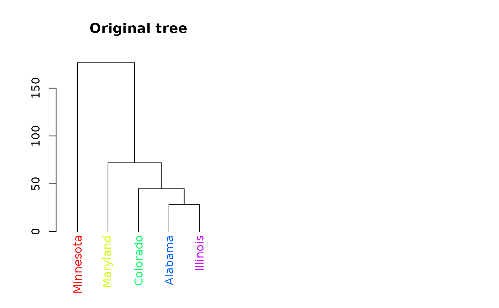
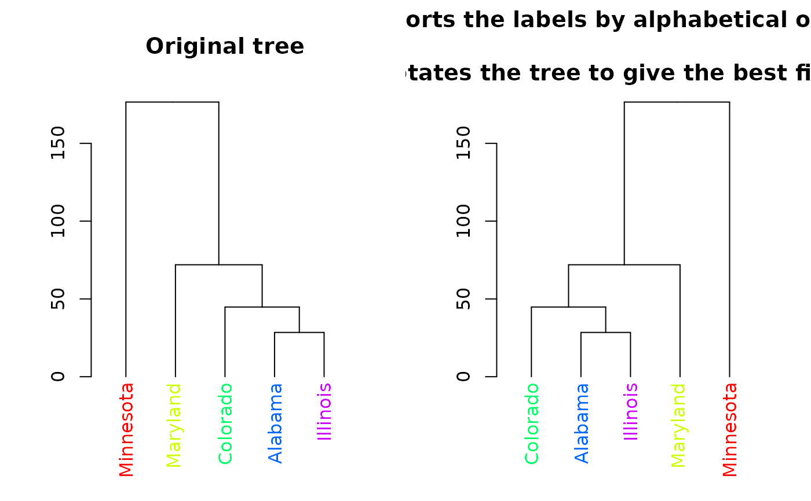
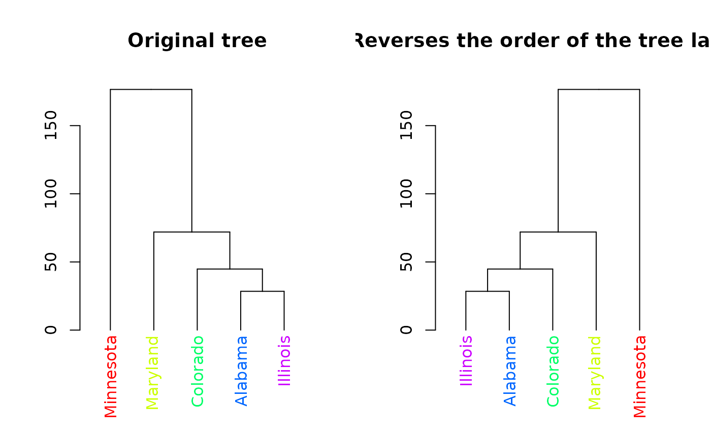
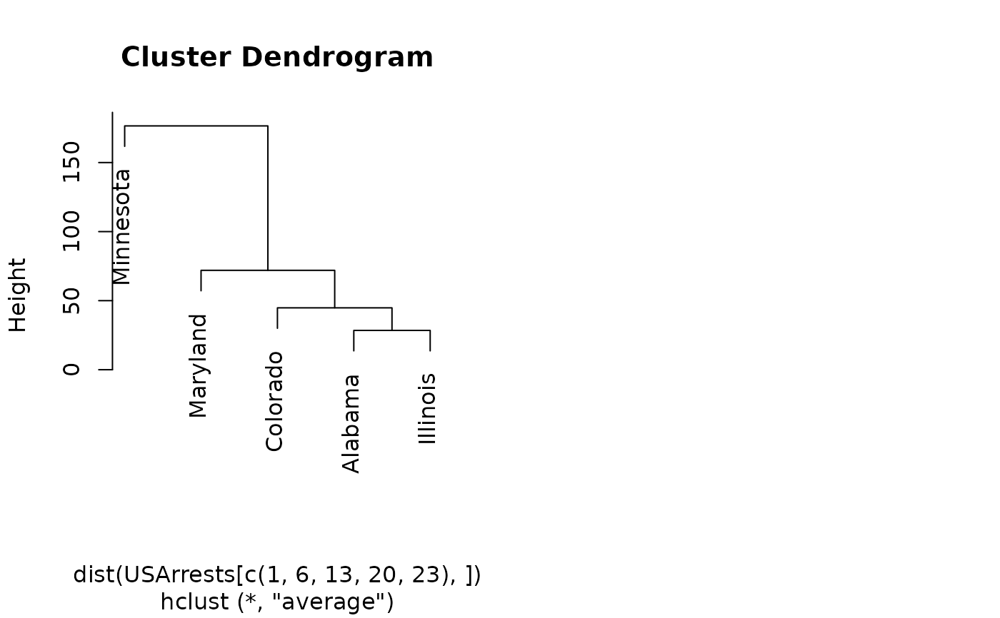
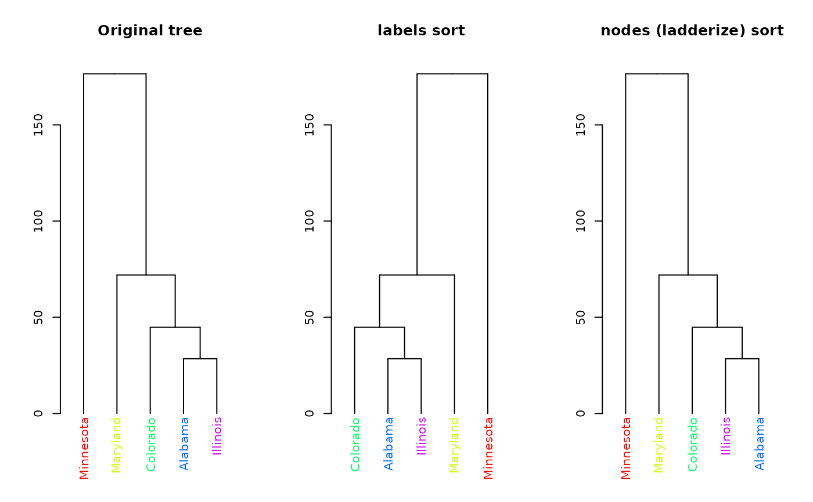

Rotates, rev and sort the branches of a tree object (dendrogram, hclust) based on a vector - eithor of labels order (numbers) or the labels in their new order (character).
rotate(x, ...)
# S3 method for default
rotate(x, order, ...)
# S3 method for dendrogram
rotate(x, order, ...)
# S3 method for hclust
rotate(x, order, ...)
# S3 method for phylo
rotate(x, ..., phy)
# S3 method for dendrogram
sort(x, decreasing = FALSE, type = c("labels", "nodes"), ...)
# S3 method for hclust
sort(x, decreasing = FALSE, ...)
# S3 method for dendlist
sort(x, ...)
# S3 method for hclust
rev(x, ...)a tree object (either a dendrogram or hclust)
parameters passed (for example, in case of sort)
Either numeric or character vector.
Is numeric: it is a numeric vector with the order of the value to be
assigned to object's label. The numbers say are just like when you use order:
which of the items on the tree-plot should be "first" (e.g: most left),
second etc. (this is relevant only to rotate)
Is character: it must be a vector with the content of labels(x), in the
order we'd like to have the new tree.
a placeholder in case the user uses "phy ="
logical. Should the sort be increasing or decreasing? Not available for partial sorting. (relevant only to sort)
a character indicating how to sort. If "labels" then by lexicographic order of the labels. If "nodes", then by using ladderize (order so that recursively, the leftmost branch will be the smallest)
A rotated tree object
The motivation for this function came from the function
order.dendrogram NOT being very intuitive.
What rotate aims to do is give a simple tree rotation function which
is based on the order which the user would like to see the tree rotated by
(just as order works for numeric vectors).
rev.dendrogram is part of base R, and returns the tree object
after rotating it so that the order of the labels is reversed.
Here we added an S3 method for hclust objects.
The sort methods sort the labels of the tree (using order)
and then attempts to rotate the tree to fit that order.
The hclust method of "rotate" works by first changing the object into
dendrogram, performing the rotation, and then changing it back to hclust.
Special care is taken in preserving some of the properties of the hclust
object.
The ape package has its own rotate(ape) function
(Which is sadly not S3, so cannot be easily connected with the
current implementation). Still, there is an S3 plug that makes sure people
loading first ape and then dendextend will still be able to
use rotate without a problem.
Notice that if you will first load ape and only then dendextend,
using "rotate" will fail with the error: "Error in rotate(dend, ____) :
object "phy" is not of class "phylo"" - this is because rotate in ape
is not S3 and will fail to find the rotate.dendrogram function.
In such a case simply run unloadNamespace(ape). Or, you can run:
unloadNamespace("dendextend"); attachNamespace("dendextend")
The solution for this is that if you have ape installed on your machine,
It will be loaded when you load dendextend (but after it).
This way, rotate will work fine for both dendrogram AND phylo
objects.
order.dendrogram, order,
rev.dendrogram, rotate (ape), ladderize
hc <- hclust(dist(USArrests[c(1, 6, 13, 20, 23), ]), "ave")
dend <- as.dendrogram(hc)
# For dendrogram objects:
labels_colors(dend) <- rainbow(nleaves(dend))
# let's color the labels to make the followup of the rotation easier
par(mfrow = c(1, 2))
plot(dend, main = "Original tree")
plot(rotate(dend, c(2:5, 1)),
main =
"Rotates the left most leaf \n into the right side of the tree"
)
#> Error in h(simpleError(msg, call)): error in evaluating the argument 'x' in selecting a method for function 'plot': object "phy" is not of class "phylo"
par(mfrow = c(1, 2))

plot(dend, main = "Original tree")
plot(sort(dend), main = "Sorts the labels by alphabetical order \n
and rotates the tree to give the best fit possible")

par(mfrow = c(1, 2))
plot(dend, main = "Original tree")
plot(rev(dend), main = "Reverses the order of the tree labels")

# For hclust objects:
plot(hc)
plot(rotate(hc, c(2:5, 1)), main = "Rotates the left most leaf \n
into the right side of the tree")
#> Error in h(simpleError(msg, call)): error in evaluating the argument 'x' in selecting a method for function 'plot': object "phy" is not of class "phylo"
par(mfrow = c(1, 3))

dend %>% plot(main = "Original tree")
dend %>%
sort() %>%
plot(main = "labels sort")
dend %>%
sort(type = "nodes") %>%
plot(main = "nodes (ladderize) sort")
